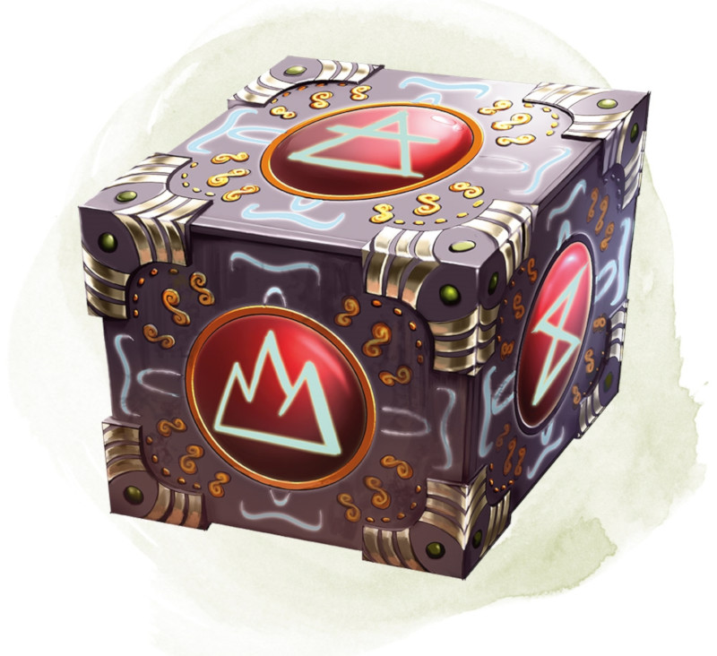

Cubic Gate
[ Cube des plans ]
Wondrous item, legendary
This cube is 3 inches across and radiates palpable magical energy. The six sides of the cube are each keyed to a different plane of existence, one of which is the Material Plane. The other sides are linked to planes determined by the DM.
You can use an action to press one side of the cube to cast the gate spell with it, opening a portal to the plane keyed to that side. Alternatively, if you use an action to press one side twice, you can cast the plane shift spell (save DC 17) with the cube and transport the targets to the plane keyed to that side.
The cube has 3 charges. Each use of the cube expends 1 charge. The cube regains 1d3 expended charges daily at dawn.
You can use an action to press one side of the cube to cast the gate spell with it, opening a portal to the plane keyed to that side. Alternatively, if you use an action to press one side twice, you can cast the plane shift spell (save DC 17) with the cube and transport the targets to the plane keyed to that side.
The cube has 3 charges. Each use of the cube expends 1 charge. The cube regains 1d3 expended charges daily at dawn.
Dungeon Master´s Guide (SRD)
